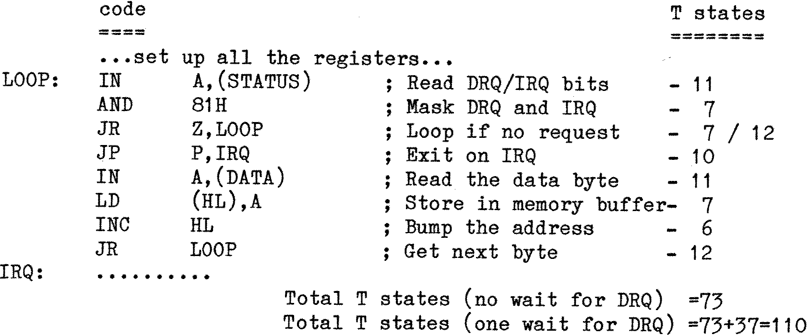

80-Bus News |
July–October 1982 · Volume 1 · Issue 3 |
| Page 40 of 51 |
|---|
Every once in a while I get an enquiry (or statement!) passed to me about the possiblity (or impossibility!) of using the Gemini GM809 disk controller card (for which I have written various BIOS’s) with double density 8″ drives. Rather than publish a few lines of code showing how it can be done I’ve presented it in the form of a short tutorial in the hope that people other than those with 8″ drives and GM809 will find it useful.
Problem: How to code a routine to handle the data transfer for the Western Digital 1797 disk controller and 8″ double density drives? (In the following discussion it is assumed that the target system has a Z80A running at 4MHz with no Wait states. However the same arguments apply to a 2MHz system and double density 5.25″ drives, but all the times should be doubled).
It will be useful, though not essential, if the following items are to hand:
GM809 circuit diagram.
1797 Data sheet.
Z80 Data sheet.
An 8″ DD disk has a serial data transfer rate of 250kbits/sec which results in a byte transfer to/from the controller every 16us (64 T-states with a 4MHz clock). Therefore it would appear that the data transfer routine must be able to move data at this rate. Can this be achieved?
Once the 1797 controller has been given a Read or Write instruction the controlling program then has to transfer the data to/from the disk under the control of the DRQ (Data ReQuest) signal from the 1797. This DRQ signal appears externally (on pin 38) of the 1797, and also internally as bit 1 of the status byte that can be read from the 1797. When the data transfer is complete (or the 1797 gives up because of an error condition), the INTRQ signal, (INTerrupt ReQuest), on pin 39 comes on. (Also bit 0, the “Busy” flag, gets reset in the internal status register). With GM809 the external DRQ and INTRQ signals are connected to bits 7 and 0 of another input port, and so may be read directly as well as via the bits in the 1797’s internal status register.
Shown below is a first attempt at coding the data transfer routine for the Read command. All it has to do is transfer a byte every time a DRQ (Data ReQuest) occurs, and exit when an IRQ (Interrupt ReQuest) occurs. Note that it uses the externally read status bits.
The AND 81H masks out the DRQ and INTRQ status bits. If neither is set the Z flag gets set and so the routine waits. Once one or other bit is set it will fall through to the following bit of code. At this point there is no need to do a
| Page 40 of 51 |
|---|